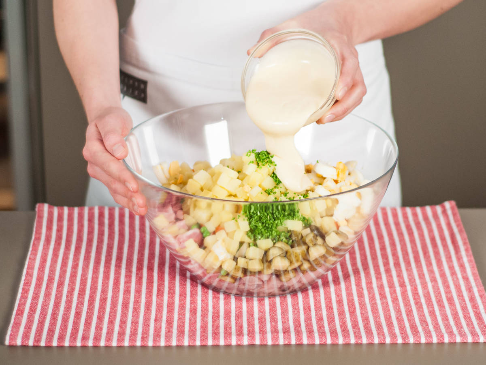

Оливье: новогодний / русский салат
Ингридиенты
| 9 | яиц |
| 250 г | маринованой селёдки |
| 80 г | ветчины |
| 80 г | курицы |
| 300 г | докторской колбасы |
| 8 | солёных огурцов |
| 10 г | лука |
| 3 | картошки |
| 2 | морковки |
| 150 г | горошка |
| 1 ч.л. | горчицы |
| 300 мл | растительного масла |
Шаг 1/8
- 6 яиц
Добавьте две трети яиц в кастрюлю и залейте холодной водой. Доведите до кипения и дайте повариться 7 - 8 мин. Вынуть из кастрюли и сразу же промыть холодной водой. Очистить, когда яйца остынут.
Шаг 2/8
- 250 г селёдки
- 80 г ветчины
- 80 г курицы
- 300 г докторской колбасы
- 10 г лука water
- 3 картошки
- 2 моркови
Покрышить яйца. Порезать селёдку, варёную курицу и маринованые огурцы. Мелко нарезать лук. Картофель и морковь очистить и нарезать мелкими кубиками.
Шаг 3/8
- соль
Добавить кубики моркови в кастрюлю с слегка подсоленной кипящей водой и бланшировать в течение 3 - 4 мин. Вынуть из воды и остудить.
Шаг 4/8
- 150 г горошка
Затем добавить горох в кипящую воду и бланшировать в течение 2 - 3 мин. Дать остыть вместе с морковью.
Шаг 5/8
- соль
В другой кастрюле довести до кипения слегка подсоленную воду. Добавьте картофельные кубики и продолжайте готовить в течение 10 - 13 мин. пока не свариться до конца. Затем вынуть из воды и отложить в сторону.
Шаг 6/8
- 3 яйца
- 1 ч.л. горчицы
От оставшихся яиц отделите желток. Добавьте горчицу и взбейте венчиком, чтобы все хорошо перемешалось.
Шаг 7/8
- 300 мл растительного масла
- ½ лимона
Равномерно добавьте растительное масло в яичные желтки, постоянно помешивая. Взбейте хорошенько. Затем приправьте по вкусу солью, перцем и лимонным соком.
Шаг 8/8
- ½ лимона
- соль перец
Добавьте в большую миску картофель, морковь, горох, маринованые огурцы, яйца, вареное мясо, сельдь и лук. Добавить майонез и приправте по вкусу солью, перцем, цедрой и соком оставшегося лимона. Тщательно перемешайте, чтобы объединить все ингредиенты.